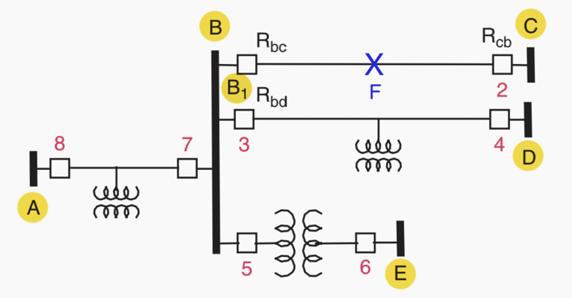
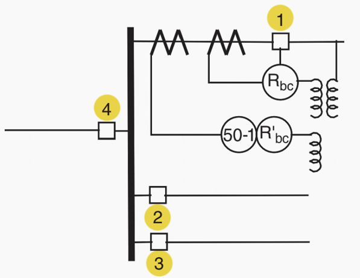

Adalah relay yang berfunsi sebagai proteksi cadangan, dan akan memerintahkan breaker untuk trip jika
relay utama gagal melakukan trip
Prinsip Kerja

Misalkan generator tertetak di bus A
Jika terjadi gangguan di titik F, relay Rbc akan memerintahkan breaker untuk trip agar generator A,
beban di titik D, dan beban di titik E tidak terkena arus gangguan
Jika Rbc gagal memerintahkan trip, maka yang akan trip adalah breaker 7,3,dan 5
Hal ini merugikan karena jika breaker tersebut trip, maka sistem akan kehilangan sumber sehingga beban di titik
D dan E ikut padam

Solusi yang dapat dilakukan adalah penambahan relay BF.
Jika relay Rbc gagal trip maka relay BF akan memerintahkan brekaer 1 (breaker
yang sama dengan relay Rbc) untuk trip
Dengan demikian, breaker di titik generator tidak perlu trip sehingga beban di titik E dan D tetap ON
Prinsip Kerja
Relay 50BF dapat diaktifkan oleh gangguan arus seperti overcurrent, differential, unbalance, atau earth fault
Saat terjadi gangguan dan setting arus pada relay terlewati, maka relay utama akan memerintahkan trip
Relay 50BF akan mendeteksi apakah arus gangguan masih mengalir pada sistem beberapa detik setelah relay utama memerintahkan trip
Jika masih, berarti relay utama gagal melakukan trip sehingga relay 50BF akan bekerja
Untuk mengetahui gangguan apa yang sebenarnya terjadi, perlu dilakukan perhitungan dengan data arus dan sudut fasa menggunakan
kalkulator 50/51, 46, dan 87 yang tersedia pada Web ini
Kemungkinan penyebab relay utama gagal trip:
Breaker masih dalam posisi rack out
Arus threshold (arus setting relay) terlalu tinggi
Time delay relay utama terlalu tinggi
Fungsi deteksi pada relay utama ON, namun fungsi tripping dimatikan